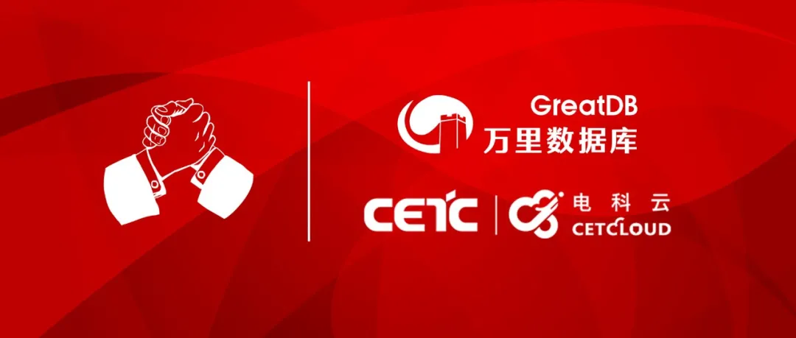

生态 | 万里数据库与电科云达成全面战略合作 共推信创产业生态做大做强
推动信创产业进程，加快完善产业生态。
近期，万里数据库与电科云达成全面战略合作，双方签署线上合作协议，希望未来在多个维度领域展开长期、全面、深入合作，共同推动信创产业生态发展，为中国信息技术产业再添安全砝码。

战略合作
在今年3月召开的全国两会和2020年中央经济工作会议中，强调信创产业发展是当今形势下国家经济发展的新动能，是推进“十四五”发展目标中新基建的最底层一环。
同时，2021年是“十四五”开局之年，信创产业作为“十四五”发展目标的重要抓手，其发展备受瞩目。信创产业是国家科技创新、数字经济化转型和提升产业链发展的关键，助推其蓬勃发展是奔向科技创新“星辰大海”、实现核心技术自主可控的重要布局和举措。
电科云作为党政军行业的首选云服务商，在政府信创领域起着举足轻重的作用。万里数据库在分布式数据库领域有着多年积累和技术积淀，双方达成合作后，将充分利用各自优势资源，密切合作，资源共享，共同推进与合作领域相关的生态系统建设、市场联合营销与业务拓展等工作。与此同时，双方将在科学研究、技术突破、产品适配、人才培养等多个维度展开一系列深度合作。
此外，针对特定项目，将联合打造虚拟团队，进行联合项目攻关，并将协同完成产品适配迁移、解决方案设计、技术培训等一系列技术工作。
万里数据库与电科云的合作，将以分布式数据库的技术优势及党政军领域的云服务优势为政府信创产业发展再添新动能，实现1+1＞2的合作共赢与产业共创。
未来，双方将借助各自优势资源在生态领域建立更广泛的影响，与同领域其他厂商形成合力，共同推动政府信创产业做大做强。
关于电科云
电科云（北京）科技有限公司是世界500强企业中国电子科技集团有限公司全资控股公司，坚持“打造面向党政军的自主安全云，做国家数据守护者”战略目标，聚焦“云+数+合规”主责主业，为党政军客户提供安全可靠的全方位、成体系、全流程的自主安全云产品和服务。
电科云完全自主可控，完全适配国产硬件，其云服务平台可广泛应用于国防军工、公共安全、电子政务和智慧城市等多个行业领域。
关于万里数据库
万里数据库（简称GreatDB）成立于2000年10月，专注于国产、自主可控的数据库产品研发及业务推广，拥有多项发明专利及软件著作权。公司的技术底蕴源自对底层核心代码的掌控，以打造“新一代分布式数据库”为目标，产品始终坚持以“极致稳定、极致性能、极致易用”为核心目标，在功能、性能、稳定性、易用性等方面均处于行业领先水平，并广泛应用于金融、运营商、能源、政府等多个行业领域。
推荐阅读1.2021央采榜单花落谁家？万里安全数据库乘风而上 实力入围
2. 热点 | 聚焦两会科技创新 万里数据库交出“数据库创新产品奖”完美答卷
3. 再获肯定 | 万里数据库入选《2020年度中国信创TOP500》


扫码二维码
关注公众号